فصل هفتم — موجک؛ دیدن «چه چیزی، کجا و در چه اندازهای» در تصویر#
روش این فصل: فرض میکنیم دانشجو تبدیل فوریه و معنای فرکانس را از درس سیگنال و سیستم و فصل چهارم میداند. بنابراین از تکرار DFT، سری فوریه یا مرور طولانی تبدیلهای هارتلی، کسینوسی، سینوسی، والش، اسلنت و مانند آنها پرهیز میکنیم. در عوض، خود موجک را با زبان ساده و ریاضیات جدی یاد میگیریم. تنها تبدیل سادهای که برای حساب دستی انتخاب شده، هار است؛ نه بهعنوان فهرستی از تبدیلها، بلکه بهعنوان مدلی شفاف برای فهم بانک فیلتر و بازسازی. مبنای ساختاری، فصل ۷ کتاب Digital Image Processing، ویرایش چهارم، گنزالز و وودز، با تمرکز بر بخشهای مرتبط با توابع پایه، هار، موجک و تحلیل چندمقیاسی است [S1].

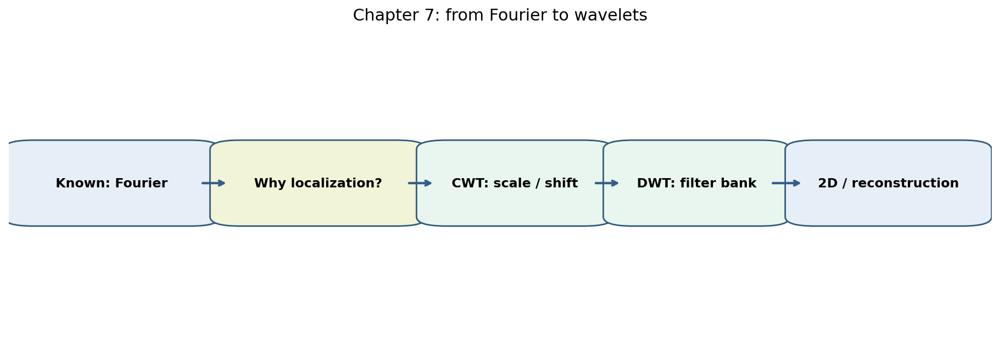
Fig. 258 نقشهٔ فصل: فوریهٔ آشنا را نقطهٔ شروع میگیریم، نیاز به مکانیابی را میبینیم، به CWT میرسیم و سپس DWT، بانک فیلتر و تحلیل تصویر را یاد میگیریم. همهٔ شکلهای این فصل برای همین جزوه تولید شدهاند.#
اهداف یادگیری#
بعد از پایان فصل باید بتوانید:
توضیح دهید چرا طیف اندازهٔ فوریه بهتنهایی محل زمانی/مکانی رخداد را نمیگوید و چرا این به معنی نقص خود تبدیل فوریه نیست؛
موجک مادر، انتقال، مقیاس و ضریب همبستگی محلی را تفسیر کنید؛
معنی CWT و اسکالوگرام، تفاوت «مقیاس» با «فرکانس» و محدودیت تفکیک همزمان را بدانید؛
با چهار عدد، تبدیل هار را دستی حساب کنید و اطلاعات را بدون خطا برگردانید؛
بفهمید بانک فیلتر دقیقاً چه چیزی را اندازه میگیرد، چرا پاییننمونهبرداری میکنیم و چرا فقط یک مسیر برای بازسازی کافی نیست؛
تجزیهٔ چندسطحی و زیرباندهای دوبعدی
LL،H،VوDرا بخوانید؛حفظ انرژی، اثر مرز تصویر و تفاوت نمایش بدون اتلاف با حذف نویز/فشردهسازی بااتلاف را تحلیل کنید؛
یک آزمایش حذف نویز موجکی را با Python اجرا و محدودیت نتیجه را ارزیابی کنید.
قرارداد نمادها: \(t\) زمان یا مکان یکبعدی، \(x[n]\) سیگنال نمونهبرداریشده، \(f(r,c)\) تصویر در سطر \(r\) و ستون \(c\)، \(\psi\) موجک مادر، \(\phi\) تابع مقیاس، \(a\) ضریب تقریب و \(d\) ضریب جزئیات است. حرف \(a\) در CWT همچنین پارامتر مقیاس است؛ این دو معنا را با ذکر زمینه از هم جدا میکنیم. در شکلها برچسبهای انگلیسی کوتاهاند تا با چیدمان راستبهچپ فارسی تداخل نداشته باشند.
۷.۱ از فوریه شروع کنیم: کدام سؤال بیپاسخ میماند؟#
در فصل چهارم، میگفتیم تصویر را میتوان به مؤلفههای فرکانسی تجزیه کرد. اگر الگوی راهراه ظریفی در تصویر باشد، مؤلفههای فرکانس بالا دیده میشوند؛ اگر روشنایی آرام تغییر کند، فرکانسهای پایین قویاند. این نگاه همچنان درست است.
اما تصور کنید در یک سیگنال، ابتدا چند نوسان سریع و در انتها چند نوسان آهسته اتفاق بیفتد. طیف کلی فوریه میگوید هر دو نوع فرکانس وجود دارند، ولی نمودار اندازهٔ طیف بهتنهایی نمیگوید کدام در ابتدای سیگنال بوده است.

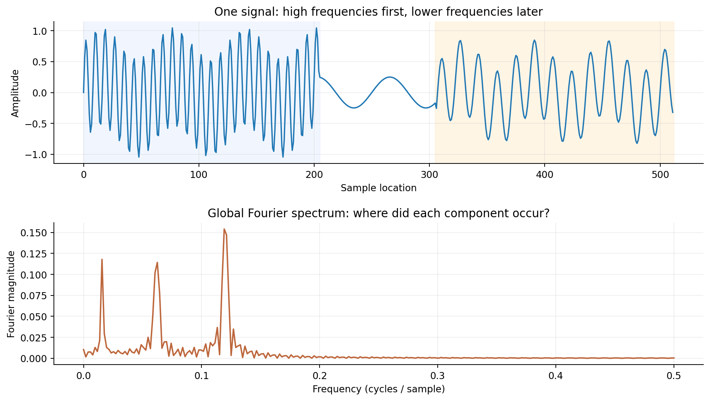
Fig. 259 بالا: سیگنالی که در بخشهای مختلف، بسامدهای متفاوت دارد. پایین: طیف فوریهٔ کل آن. قلههای طیف مکان رخداد را مستقلاً نشان نمیدهند.#
رابطهٔ آشنای تبدیل فوریه پیوسته عبارت است از:
برای یک فرکانس \(\omega\)، همهٔ زمانها در یک ضریب \(X(\omega)\) سهم دارند؛ یعنی سینوسی تحلیلکننده در تمام محور گسترده است. پس اندازهٔ ضریب، خلاصهای سراسری است. البته اگر فاز را هم نگه داریم، تبدیل فوریه در شرایط معمول وارونپذیر است و اطلاعات مکان گم نشده است؛ نکته فقط این است که نمایش سراسری، برای دیدن محل رویدادها مستقیم و شهودی نیست.
یک آزمون مهم: اگر سیگنال را فقط جابهجا کنیم، طبق خاصیت انتقال:
پس دو رخداد یکسان در دو مکان متفاوت میتوانند طیف اندازهٔ یکسان داشته باشند، هرچند فازهایشان تفاوت میکند.

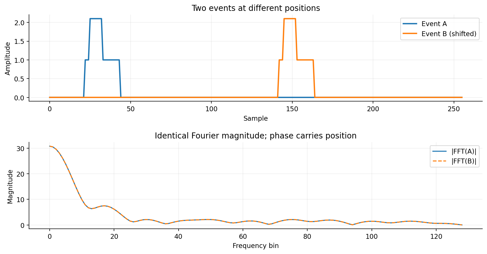
Fig. 260 دو رخداد که فقط مکانشان عوض شده است. منحنی اندازهٔ DFT آنها روی هم میافتد، زیرا تغییر مکان روی فاز اثر میگذارد.#
ایدهٔ موجک: بهجای اینکه یک موج سینوسی بیانتها را با کل سیگنال مقایسه کنیم، یک موج محدود و موضعی را در مکانهای مختلف جابهجا کنیم و اندازهاش را تغییر دهیم. آنوقت دو سؤال را همزمان میپرسیم: «چه نوع تغییر؟» و «کجا؟».
چه مقدار دقت در مکان و فرکانس ممکن است؟#
هیچ پنجرهٔ موجکی نمیتواند هم در مکان و هم در فرکانس بهصورت نامحدود باریک باشد. برای تعریف رایج واریانس زمانی و بسامد زاویهای (با قرارداد فوریهٔ رابطهٔ ۷-۱)، اصل عدمقطعیت میگوید:
در تبدیلهای پنجرهایِ با پنجرهٔ ثابت، اندازهٔ پنجره ثابت میماند. در موجک، پنجره برای تغییرات تند باریک و برای تغییرات آهسته پهن است. این یک راهبرد اندازهگیری است، نه نقض اصل عدمقطعیت.

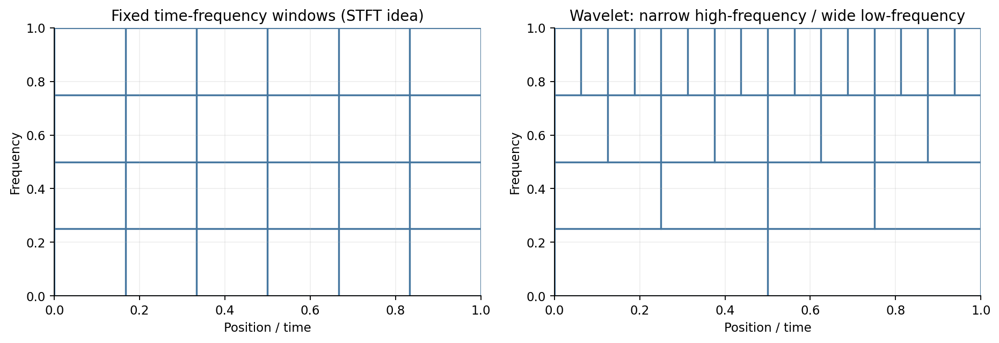
Fig. 261 تقسیمبندی مفهومی صفحهٔ مکان–فرکانس: موجک در فرکانسهای بالا مکانیابی دقیقتر و در فرکانسهای پایین تفکیک فرکانسی مناسبتری فراهم میکند. مستطیلها نمایش شماتیکاند.#
۷.۲ موجک مادر چیست؟#
موجک را میتوان یک الگوی نوسانی کوتاه دانست که معمولاً بخش مثبت و منفی دارد و میانگینش صفر است. قسمت مثبت به یک نوع تغییر پاسخ میدهد و قسمت منفی به تغییر مخالف؛ مجموع صفر باعث میشود سطح روشنایی کاملاً ثابت، بهتنهایی پاسخ جزئیات ایجاد نکند.
یک شرط بنیادی برای موجک تحلیلکنندهٔ متعارف (با فرض همگرایی انتگرال) این است:
بهزبان فوریه، این شرط یعنی \(\Psi(0)=0\)؛ موجک مؤلفهٔ ثابت را در خروجی جزئیات اندازه نمیگیرد. شرط دقیقترِ پذیرفتنیبودن برای بازسازی CWT، متناسب با قرارداد نرمالسازی، به شکل زیر بیان میشود:
صفر بودن میانگین در موجکهای خوشرفتار بسیار مهم است، ولی بهتنهایی جای تمام مفروضاتِ همگرایی و بازسازی را نمیگیرد. لازم نیست در این درس همهٔ قضایای تحلیل تابعی را اثبات کنیم؛ لازم است فرق الگوی دلخواه با موجک مناسب برای تحلیل و بازسازی را بشناسیم.
انتقال و تغییر مقیاس#
از یک موجک مادر \(\psi(t)\) خانوادهٔ زیر را میسازیم:
\(b\) مکان/انتقال است: موجک به چپ یا راست میرود.
\(|a|\) مقیاس است: مقیاس کوچک، موجک باریک و حساس به تغییرات ریز؛ مقیاس بزرگ، موجک پهن و حساس به ساختارهای درشت.
عامل \(1/\sqrt{|a|}\) برای ثابت ماندن انرژی موجک در مقیاسهای مختلف است؛ این عامل تزئینی نیست.
زیرا با تغییر متغیر \(u=(t-b)/a\) داریم:

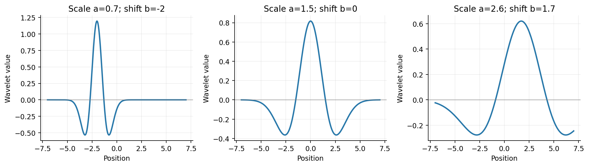
Fig. 262 یک موجک نمونه در چند مکان و مقیاس: باریک شدن برای جزئیات ریز و پهن شدن برای ساختارهای درشت. منحنی صرفاً مثال بصری از یک موجک مادر است؛ تنها شکل مجاز موجک همین نیست.#
ضریب موجک یعنی چه؟#
قبلاً در همبستگی یاد گرفتیم که ضرب داخلی دو سیگنال، میزان شباهتشان را اندازه میگیرد. در موجک هم همین اتفاق میافتد: در هر مکان و مقیاس، یک عدد اندازه میگیریم. عدد بزرگ از نظر قدرمطلق یعنی در آن ناحیه، سیگنال به الگوی موجک شباهت قابلتوجه دارد؛ علامت ضریب هم جهت تغییر را نشان میدهد.
این توضیح، مهمترین پل از فوریه به موجک است: تبدیل یک «جعبهٔ رمزآلود» نیست؛ مجموعهای از اندازهگیریهای شباهت با الگوهایی در اندازهها و مکانهای مختلف است.

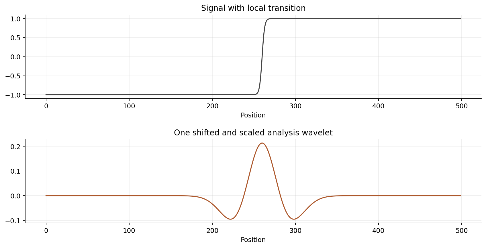
Fig. 263 مقایسهٔ موضعی سیگنال با یک موجک منتقلشده: ضریب، حاصل ضرب داخلی این دو است. برای آشکارسازی یک تغییر ناگهانی، شکل موجک و علامت ضریب اهمیت دارند.#
۷.۳ تبدیل موجک پیوسته (CWT): تعریف، معنی و خواندن خروجی#
اکنون تعریف ریاضی تبدیل موجک پیوسته را مینویسیم:
ستاره نشانهٔ مزدوج مختلط است؛ اگر موجک واقعی باشد، همان تابع بدون ستاره بهکار میرود. مفهوم فرمول ساده است: موجک را با اندازهٔ \(a\) در محل \(b\) روی سیگنال میگذاریم، ضرب میکنیم، و جمع میزنیم. نتیجه یک عدد بهنام \(W_x(a,b)\) است.
چون \(a\) و \(b\) هر دو تغییر میکنند، نتیجهٔ CWT یک نقشهٔ دوبعدی از ضرایب است؛ برخلاف DFT یکبعدی که یک ضریب به ازای هر فرکانس دارد. این نقشه را معمولاً با رنگ نمایش میدهند و به آن اسکالوگرام میگویند.

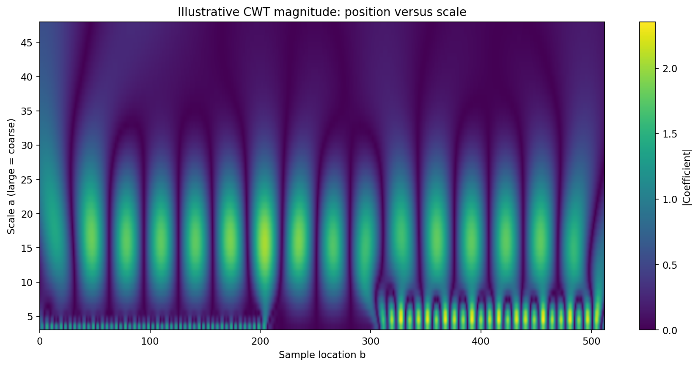
Fig. 264 اسکالوگرام نمونه: محور افقی موقعیت، محور عمودی مقیاس و رنگ نمایندهٔ بزرگی ضریب است. رنگ پررنگتر در یک ناحیه یعنی موجکِ آن مقیاس در آن مکان پاسخ بیشتری گرفته است.#
دقت مهم: مقیاس با فرکانس برابر نیست. برای یک موجک مادر با فرکانس مرکزی \(f_c\) و دورهٔ نمونهبرداری \(\Delta t\)، ارتباط تقریبی و وابسته به موجک چنین است:
بنابراین اگر مقیاس دو برابر شود، فرکانس شاخص تقریباً نصف میشود؛ اما تبدیل مقیاس به هرتز نیازمند تعیین موجک مادر و نرخ نمونهبرداری است. در پیادهسازی دیجیتال CWT، مقیاسهای خیلی کوچک ممکن است درست نمونهبرداری نشوند و aliasing بدهند [S3].

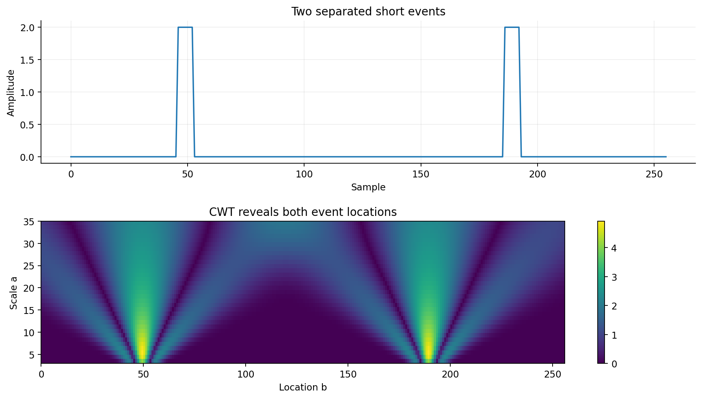
Fig. 265 دو رویداد کوتاه در دو مکان متفاوت: اسکالوگرام، مکان هر دو را نشان میدهد. این همان اطلاعات محلی است که دیدن آن از روی اندازهٔ طیف سراسری فوریه بهتنهایی آسان نبود.#
پرسش برای کلاس: اگر یک پالس را بدون تغییر شکل، ۷۰ نمونه جابهجا کنیم، پاسخ CWT چگونه عوض میشود؟ بخش مهمی از نقشهٔ پاسخ نیز ۷۰ نمونه جابهجا میشود؛ مقیاسهای شاخص تقریباً هماناند. این خاصیت شهودی، تفاوت «محل» و «اندازهٔ ساختار» را آشکار میکند.
۷.۴ چرا به موجک گسسته (DWT) میرویم؟ پل CWT تا DWT#
CWT برای تحلیل بسیار آموزنده است، ولی اگر برای یک سیگنال \(N\) نمونهای تعداد زیادی مقیاس و تمام انتقالها را محاسبه کنیم، ضرایب فراوان و حتی افزونگی خواهیم داشت. برای نمایش فشرده، الگوریتم سریع و بازسازی عملی میخواهیم تنها تعداد مناسبی اندازهگیری مستقل داشته باشیم.
یک راه شناختهشده، انتخاب شبکهٔ دودویی/دایادیک از تغییر مقیاس و انتقال است:
این نوشتار از همان قرارداد \(a=2^j\) برای پهنتر شدن موجک استفاده میکند. در کتابهای دیگر ممکن است \(2^{j/2}\psi(2^jt-k)\) دیده شود: آنجا جهت شمارهگذاری سطوح برعکس انتخاب شده است؛ فیزیک مسئله تفاوتی ندارد.

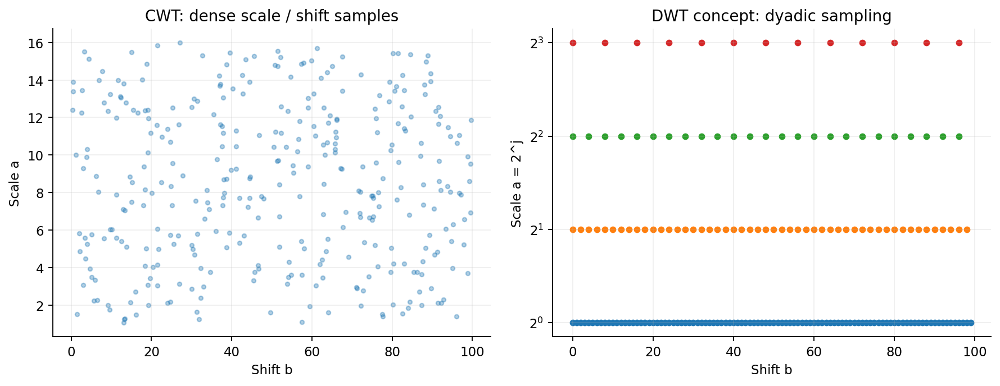
Fig. 266 سمت چپ: برداشت مفهومی از تعداد فراوان انتقال و مقیاس در CWT. سمت راست: نمونهبرداری مرحلهای در DWT؛ مقیاس دو برابر که شود فاصلهٔ مکانهای نمونهبرداری هم تغییر میکند.#
اما دقت کنیم: فقط انتخاب \(a=2^j\)، بهتنهایی یک تبدیل گسستهٔ وارونپذیر نمیسازد. باید موجک و تابع مقیاس طوری انتخاب شوند که چارچوب مناسبی برای نمایش/بازسازی ایجاد کنند. برای خانوادههای موجک متعامد، این کار با بانک فیلتر پایینگذر و بالاگذر عملی میشود؛ روشی که در پژوهش بنیادی ماله دربارهٔ تجزیهٔ چندتفکیکی توضیح داده شده است [S2].
یک تصویر ذهنی درست از بانک فیلتر#
وقتی یک سیگنال وارد بانک فیلتر میشود، هر فیلتر به بخش مشخصی از تغییرات حساستر است. خروجی یک عدد واحد نیست: در هر سطح، چند دنباله یا تصویر از ضرایب داریم. در یک سیگنال یکبعدی، محور مکان/زمان باقی میماند و محور مقیاس نیز اضافه میشود. در تصویر دوبعدی، ضرایب در هر سطح هم مکان افقی و عمودی دارند و هم نوع جهت/مقیاس؛ یعنی میتوان بهطور مفهومی از مجموعهای سهبعدی یا چندبخشی از اطلاعات صحبت کرد، هرچند اندازهٔ ماتریسها در سطوح مختلف یکسان نیست.

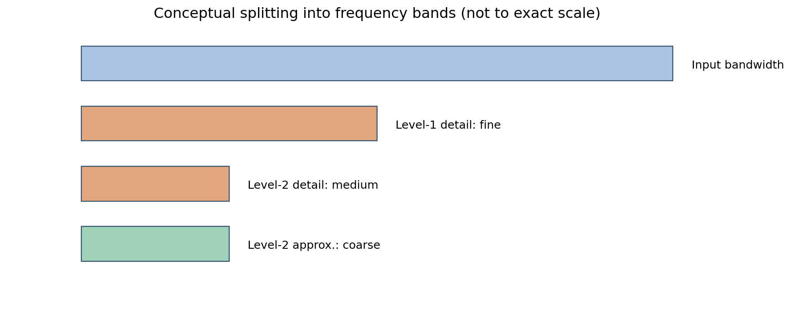
Fig. 267 بانک فیلتر سیگنال را به باندهای ریزتر تقسیم میکند. نمای مستطیلها شماتیک است و حد دقیق باندها یا پاسخ ایدهآل فیلترها را ادعا نمیکند.#
۷.۵ هار؛ فقط یک مثال برای فهم عمیق DWT#
برای شروع، سادهترین موجک متعامد را انتخاب میکنیم. تابع مقیاس و موجک مادر هار در یک قرارداد رایج:
تابع مقیاس برای نگهداری میانگین/تقریب و موجک برای نگهداری اختلاف/جزئیات است. در نمونههای گسسته، در هر جفت پیکسل یا دو نمونهٔ همسایه، دو عدد به دست میآوریم:
سؤال رایج این است: چرا دقیقاً \(\sqrt2\)، نه ۲؟ اگر بر ۲ تقسیم کنیم میانگین عددی معمول به دست میآید، اما برای تبدیل متعامدِ نرمالشده از \(\sqrt2\) استفاده میکنیم تا انرژی حفظ شود و پایهها طول واحد داشته باشند. \(a\) از نظر معنا «خلاصهٔ سطح» است، نه الزاماً همان میانگین حسابیِ خام.
ماتریس متناظر با تبدیل یک جفت نمونه:
چون \(Q^{-1}=Q^T=Q\)، بازسازی دقیق است:
نقش هر مؤلفه واضح است: با داشتن فقط \(a\)، تغییر بین دو عضو جفت را نمیتوان بازسازی کرد؛ \(d\) دقیقاً همان اطلاعات کممانده برای بازگشت به دو مقدار اولیه است.
مثال دستی کامل با چهار نمونه#
فرض کنید:
در سطح اول، جفتها را جداگانه بررسی میکنیم:
در سطح دوم، فقط تقریب سطح قبل را دوباره تجزیه میکنیم:
پس نمایش دو سطحی همین چهار عدد، مجموعهٔ چهار ضریب \(\{a_2=14,d_2=-4,d_1[0]=-\sqrt2,d_1[1]=-\sqrt2\}\) است؛ تعداد اعداد عوض نشده است.

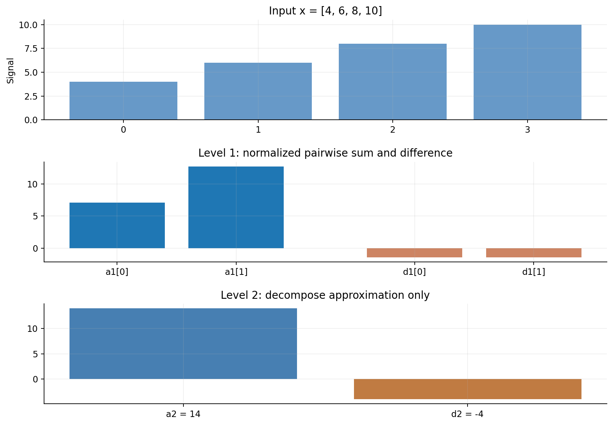
Fig. 268 محاسبهٔ واقعی با ورودی \([4,6,8,10]\). در سطح دوم فقط دو عضو \(a_1\) تبدیل میشوند؛ \(d_1\) باید برای بازسازی نهایی نگه داشته شود.#
بازسازی را هم دستی انجام میدهیم. ابتدا از \(a_2,d_2\) داریم:
سپس \(a_1\) را با ضرایب ذخیرهشدهٔ \(d_1\) در رابطهٔ ۷-۱۴ قرار میدهیم: دو نمونهٔ اول \(4,6\) و دو نمونهٔ دوم \(8,10\) به دست میآیند. چیزی را حدس نزدیم؛ اطلاعات دقیقاً بازگشت.
چرا انرژی حفظ شد؟#
برای هر جفت داریم:
در مثال بالا:
حفظ انرژی یا پارسهوال به این دلیل است که تبدیل هار با این نرمالسازی متعامد است. ولی حفظ انرژی به معنی فشرده شدن فایل نیست: ما هنوز چهار ضریب داریم و برای ذخیرهٔ آنها به کدگذاری دیگری نیاز داریم؛ این تفاوت را در فصل ۸ نیز دیدیم.
۷.۶ بانک فیلتر: چگونه از هار به پیادهسازی واقعی میرسیم؟#
هر فرمول رابطهٔ ۷-۱۲ را میتوان بهصورت یک فیلتر دید: یکی دو نمونهٔ مجاور را جمع میکند و دیگری از هم کم میکند. سپس از هر جفت فقط یک مقدار میگیریم. فیلترهای تحلیل هار در قرارداد جفتسازی این جزوه عبارتاند از:
\(h_0\) «پایینگذر» است چون سیگنال آهسته/ثابت را عبور میدهد و \(h_1\) «بالاگذر» است چون به اختلاف همسایهها پاسخ میدهد. در یک پیادهسازی عمومی مبتنی بر کانولوشن، ترتیب ضرایب و فاز به قرارداد وارونسازی فیلتر وابسته است؛ کد این فصل مستقیماً جفت نمونهها را محاسبه میکند تا ابهام قراردادی پیش نیاید.

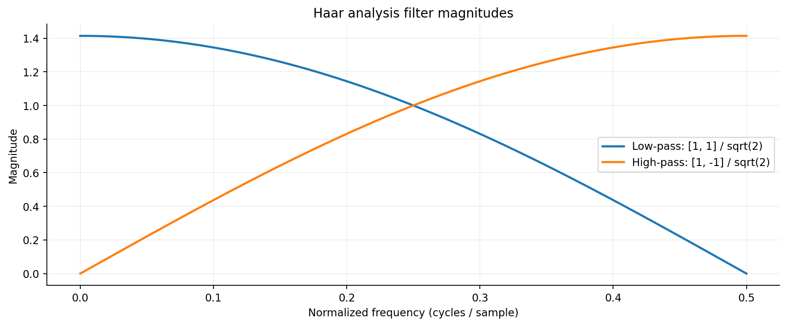
Fig. 269 اندازهٔ پاسخ فرکانسی دو فیلتر هار. فیلتر جمعکننده در فرکانس صفر قوی است، و فیلتر تفاضلگیر در صفر پاسخ صفر دارد.#
چرا بعد از فیلتر، پاییننمونهبرداری میکنیم؟#
اگر ورودی \(N\) نمونه داشته باشد، خروجی پایینگذر ابتدا میتواند \(N\) نمونه و خروجی بالاگذر هم \(N\) نمونه داشته باشد؛ در نتیجه دو برابر داده خواهیم داشت. بعد از جداسازی باندها، هر خروجی را با عامل ۲ پاییننمونهبرداری میکنیم:
که رابطهای نمادین با قرارداد مناسب فاز و مرز است؛ در مثال هار با جفتسازی مستقیم، دقیقاً رابطهٔ ۷-۱۲ را اجرا میکنیم. اکنون \(N/2\) ضریب تقریب و \(N/2\) ضریب جزئیات داریم: جمعاً همان \(N\) عدد.

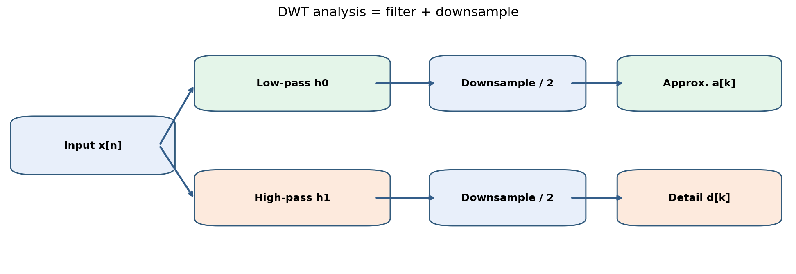
Fig. 270 بانک تحلیل دوکاناله: دو فیلتر مختلف روی ورودی کار میکنند؛ پس از پاییننمونهبرداری، مسیر بالا تقریب و مسیر پایین جزئیات را تولید میکند.#
اشتباه رایج: پاییننمونهبرداریِ یک خروجیِ فیلتر بهتنهایی ممکن است aliasing ایجاد کند. در بانک فیلتر کاملِ طراحیشده برای بازسازی دقیق، دو مسیر با هم و با فیلترهای سنتز مناسب، جملههای aliasing را در بازسازی خنثی میکنند. این نتیجه حاصل طراحی فیلترهاست، نه تضمین هر جفت فیلتر تصادفی.
بازسازی دقیق با بانک سنتز#
در تبدیل معکوس، هر دنباله را دوبرابر میکنیم (با قرار دادن صفر بین نمونهها)، از فیلترهای سنتز عبور میدهیم و خروجیها را جمع میکنیم. در هار میتوان این عملیات را سادهتر با رابطهٔ ۷-۱۴ پیاده کرد.

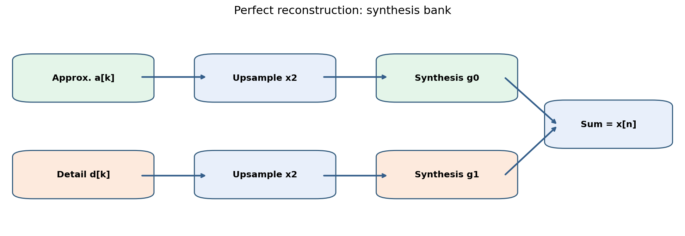
Fig. 271 مسیر برگشت: بالانمونهبرداری و فیلتر سنتز، دو خروجی را جمع میکنند. در طراحی صحیح، نتیجه همان سیگنال ورودی است.#
در یک بانک متعامد با طول فیلتر زوج و یک قرارداد رایج برای ضرایب، بالاگذر میتواند از پایینگذر چنین ساخته شود:
این رابطه با انتخاب فاز/علامت و قرارداد شاخصگذاری مرتبط است؛ برای همهٔ بانکهای دودویی، متعامدنبودن، یا زیستیمتعامد بهتنهایی نسخهٔ عمومی و کافی طراحی نیست. در این فصل وارد طراحی خانوادههای طولانیِ فیلتر نمیشویم؛ آشنایی دقیق با هار، ایدهٔ بانک فیلتر و بازسازی برای ادامهٔ کار کافی است.
۷.۷ تحلیل چندتفکیکی (MRA): ریاضیات پشتِ تجزیهٔ چندسطحی#
تا اینجا یک سطح را دیدهایم. برای چندسطحی شدن، کافی است همان بانک فیلتر را بارها روی خروجی تقریب اعمال کنیم؛ یعنی اول \(a_1,d_1\)، سپس از \(a_1\)، خروجی \(a_2,d_2\) و … را بسازیم. جزئیاتِ قبلی دیگر دوباره تجزیه نمیشوند، مگر در روش دیگری به نام Wavelet Packet که خارج از محدودهٔ این درس است.

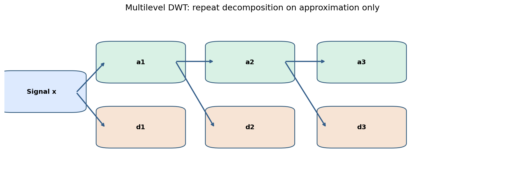
Fig. 272 درخت چندسطحی DWT معمولی: فقط شاخهٔ تقریبِ هر سطح به سطح بعدی میرود. خروجی نهایی شامل تقریبِ آخر و تمام جزئیاتِ سطحهای پیشین است.#
برای خوانندهای که میخواهد بعداً موجک را تخصصی دنبال کند، چارچوب ریاضی مهم زیر را نیز میآوریم. در تحلیل چندتفکیکی، فضاهای تقریبیِ تودرتو \(V_j\) را در نظر میگیریم؛ با یک قرارداد رایج که \(j\) بزرگتر، تفکیک مکانی ظریفتر است:
\(V_j\) اطلاعاتی را نگه میدارد که در سطح تفکیک \(j\) قابل نمایش است و \(W_j\) اطلاعات اضافهشده بین دو سطح متوالی را نشان میدهد. علامت \(\oplus\) در حالت متعامد یعنی جمع مستقیم متعامد. این شمارهگذاریِ نظری را با «سطح ۱، ۲ و ۳ تجزیهٔ رایانهای» اشتباه نگیرید؛ در الگوریتم پاییننمونهبرداری، با افزایش شمارهٔ سطح، تقریبِ باقیمانده درشتتر میشود.
توابعِ پایهٔ تقریب و جزئیات در همین قرارداد:
در نمایش متعامد، ضرایب را با ضرب داخلی میگیریم:
این همان ایدهٔ سادهٔ بخش ۷.۲ است، فقط این بار ریاضیِ فضای تقریب و فضای اختلاف نیز مشخص شده است. به لحاظ مفهومی:
در حالت متعامد میتوان انرژی را بین این دو مؤلفه جمع زد. در خانوادههای زیستیمتعامد نیز بازسازی دقیق ممکن است، ولی پایههای تحلیل و سنتز معمولاً یکسان نیستند و برابری سادهٔ انرژی لزوماً برقرار نیست. این تفاوت را بهعنوان مرز اعتبار فرمولها میشناسیم، بدون اینکه وارد خانوادهسازیهای پیچیده شویم [S2].
۷.۸ چرا موجک برای تصویر دوبعدی مناسب است؟#
در تصویر، تغییرات فقط روی یک محور نیستند: ممکن است یک خطِ تقریباً افقی، یک مرزِ عمودی یا بافتی با تغییرات در هر دو جهت داشته باشیم. تبدیل دوبعدی را بهصورت جداسازپذیر انجام میدهیم: ابتدا فیلتر روی یک راستا (مثلاً ستونهای هر سطر)، سپس روی راستای دیگر (سطرهای هر ستون). نتیجهٔ یک سطح شامل چهار زیرباند است.
زیرباند در این جزوه |
چه کاری کردهایم؟ |
چه چیزی برجسته میشود؟ |
|---|---|---|
|
پایینگذر در هر دو راستا |
تصویر تقریباً هموار و درشتمقیاس |
|
بالاگذر در راستای سطرها، پایینگذر در راستای ستونها |
مرزها/ساختارهای افقی؛ تغییر بالا به پایین |
|
پایینگذر در راستای سطرها، بالاگذر در راستای ستونها |
مرزها/ساختارهای عمودی؛ تغییر چپ به راست |
|
بالاگذر در هر دو راستا |
جزئیات مایل، گوشهها و تغییرات مرکب |
دقت نامگذاری: در برخی کتابخانهها، ترتیب محور و نامهای LH/HL یا cH/cV فرق میکند. همیشه باید بهجای حفظ جای بلوک، ببینید فیلتر بالاگذر روی کدام محور اعمال شده است. تعریف بالا با کد همراه فصل یکسان است [S4].

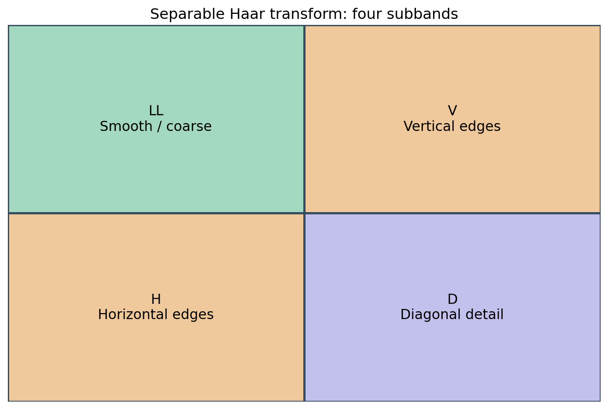
Fig. 273 نقشهٔ چهار زیرباند در قرارداد این جزوه: بالا-چپ LL، بالا-راست V، پایین-چپ H و پایین-راست D.#
مثال دوبعدیِ کاملاً دستی: یک بلوک ۲ در ۲#
فرض کنید:
فرمولهای مستقیم هار دوبعدی، با قرارداد جدول بالا:
با قرار دادن اعداد:
تعبیر: عدد ۱۴ خلاصهٔ شدت چهار پیکسل است؛ منفی بودن \(H\) میگوید نیمهٔ پایین نسبت به نیمهٔ بالا روشنتر است؛ منفی بودن \(V\) میگوید سمت راست نسبت به سمت چپ روشنتر است؛ \(D=0\) یعنی مؤلفهٔ تعاملی قطریِ این بلوک صفر است، نه اینکه تصویر هیچ لبهای ندارد.
برای بازسازی، از جمع و تفریق چهار ضریب استفاده میکنیم:
پس ۴ پیکسل به ۴ ضریب تبدیل شدند و دقیقاً برگشتند؛ نه تصویر کوچکتر شده و نه فشردهسازی بهخودیِخود انجام شده است.
دیدن زیرباندها در تصویر کامل#

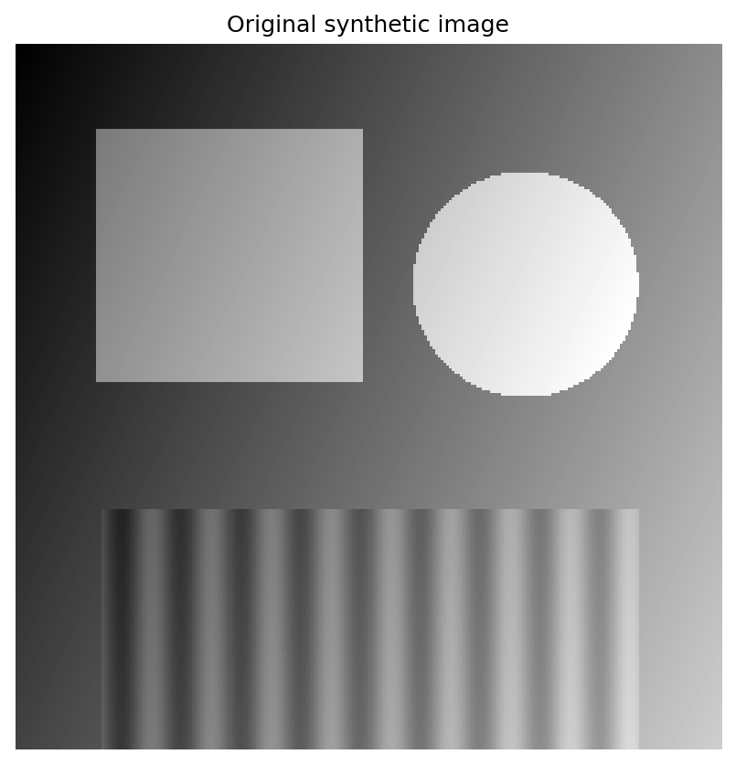
Fig. 274 تصویر خاکستری مصنوعیِ تولیدشده با کد: گرادیان، مستطیل، دایره و بافت ریز دارد. هدف آن است که پاسخ هر زیرباند را بدون استفاده از تصویر حقنشردار ببینیم.#

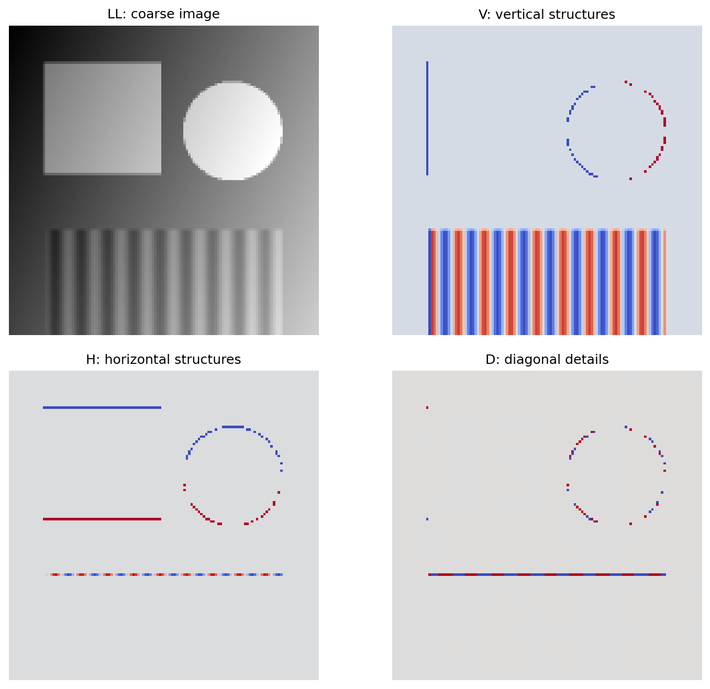
Fig. 275 چهار خروجیِ یک سطح DWT دوبعدی. برای خوانایی، ضرایبِ دارای علامت در زیرباندهای جزئیات با نقشهٔ رنگی جداگانه نمایش داده شدهاند؛ این نمودارها شدت خاکستری استاندارد تصویر نیستند.#
اگر فقط زیرباند LL را دوباره تجزیه کنیم، تصویر در یک مسیر سلسلهمراتبی چندمقیاسی نمایش داده میشود؛ تقریب سطح بعدی نصفِ طول و عرض تقریب قبلی است.

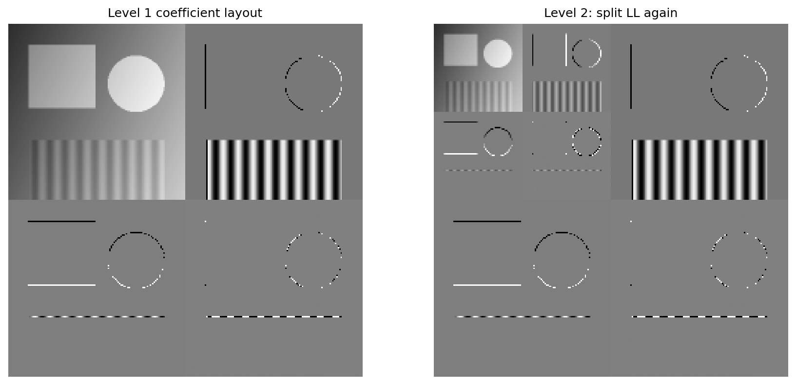
Fig. 276 آرایش نمایشی ضرایب در یک و دو سطح. برای دیدن باندهای مثبت و منفی، هر ناحیه جداگانه مقیاس رنگ شده است؛ بنابراین نباید از روشنایی بلوکهای متفاوت مستقیماً نسبت انرژی استخراج کرد.#
در هر سطح برای تصویر \(M\times N\) با اندازههای زوج، چهار آرایهٔ \(M/2\times N/2\) داریم و تعداد کل ضرایب همچنان \(MN\) است:
با تجزیهٔ سطحهای بیشتر نیز تعداد کل ضرایبِ نگهداریشده (تقریب آخر + تمام جزئیات) برابر تعداد پیکسلهای ورودی میماند. پس کاهش رزولوشن تقریب را با حذف خودکار اطلاعات کل تصویر یکی نگیرید.
۷.۹ بازسازی و حفظ انرژی: «وارونپذیری» دقیقاً به چه معناست؟#
در هار متعامد، اگر هیچ ضریبی را حذف یا دستکاری نکنیم و تبدیل مستقیم و معکوس با همان قرارداد و ابعاد انجام شود، داریم:
و با صرفنظر از خطای گردکردن محاسباتی:

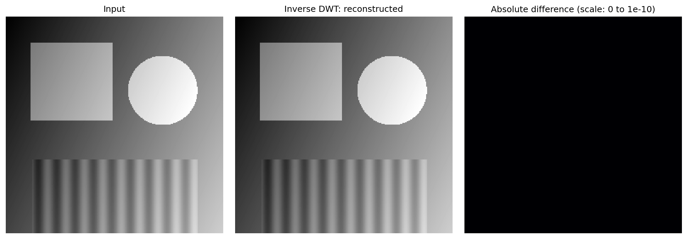
Fig. 277 ورودی، بازسازی معکوس و قدرمطلق اختلاف. در این آزمایش اختلاف عددی در حد دقت محاسبات شناور است؛ این به معنای خروجیِ JPEG 2000 یا الگوریتم فشردهسازی نیست.#

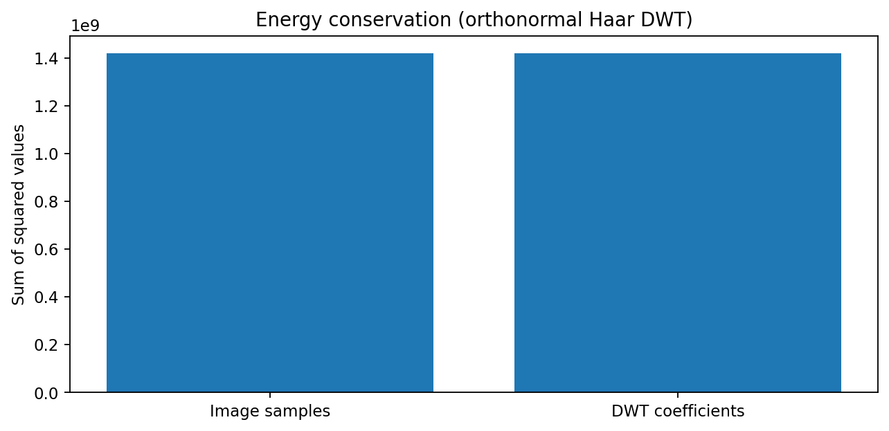
Fig. 278 مقایسهٔ مجموع مربعهای پیکسلها و مجموع مربعهای همهٔ ضرایب هار در تصویر نمونه؛ دو عدد در دقت شناور برابرند.#
دقت علمی: تبدیل متعامد از دید ریاضی بدون اتلاف اطلاعات است، اما ذخیرهکردن ضرایب بهصورت اعداد با دقت محدود یا تبدیل آنها به اعداد صحیح میتواند گردکردن ایجاد کند. پس باید میان وارونپذیری نظری، خطای شناور و فشردهسازی بدون اتلاف با قالب فایل تمایز بگذاریم.
۷.۱۰ اثر لبهها، تعداد سطح و انتخاب موجک#
در صفحهٔ کاغذ فرمولهای موجک معمولاً روی سیگنالهای نامتناهی نوشته میشوند؛ اما تصویر واقعی مرز دارد. فیلتر نزدیک مرز به نمونههایی بیرون از تصویر نیاز پیدا میکند. چند راه متداول، افزودن صفر، تکرار مقدار مرزی، بازتاب متقارن یا امتداد دورهای است [S5]. این انتخاب میتواند ضرایب نزدیک مرز را عوض کند.

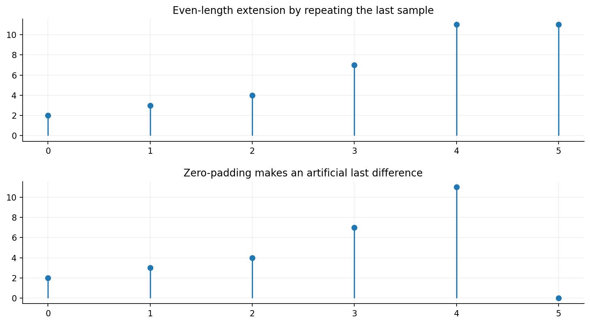
Fig. 279 برای سیگنال پنجنمونهای، افزودن یک نمونهٔ ششم با تکرار مقدار آخر یا با صفر، اختلاف نهایی متفاوتی میسازد. این تنها یک نمایش ساده از اهمیت سیاست مرزی است؛ همهٔ روشهای تمدید، دقیقاً همین پیادهسازی را ندارند.#
قرارداد کد این فصل: برای روشنماندن رابطههای حساب دستی، طول سیگنال ۱بعدی را زوج و ارتفاع و عرض تصویر را در هر سطح زوج فرض کردهایم. هیچ padding پنهانی انجام نمیشود. اگر اندازهٔ تصویر مثلاً \(250\times250\) باشد، برای چند سطح پیاپی باید پیش از شروع، اندازه و روش گسترش مرزی را مشخص کرد؛ نمیتوان بدون بررسی سه سطح را تضمین کرد.
در حالت رایج، ابعاد باید بر \(2^J\) بخشپذیر باشند تا \(J\) سطح از الگوریتم آموزشی ما بدون padding انجام شود:
چرا سطحهای بسیار زیاد همیشه بهتر نیستند؟ چون تقریبِ خیلی درشت، مکانیابی را کمدقت میکند و ممکن است ساختار معنادار تصویر در یک یا چند ضریب خلاصه شود. تعداد سطح باید متناسب با اندازهٔ ساختار هدف، اندازهٔ تصویر و هدف پردازش باشد. در این درس هار را برای محاسبه انتخاب کردهایم؛ در کار تخصصی خانوادههای موجک هموارتر و فیلترهای بلندتر نیز کاربرد دارند، ولی نیازی به حفظ نام و ماتریس همهٔ آنها نیست.
۷.۱۱ کاربرد عملی: حذف نویز با موجک — و محدودیتهایش#
یکی از کاربردهای طبیعی تحلیل چندمقیاسی، جدا کردن بخشی از نویز ریز از ساختار تصویر است. فرض کنید تصویر مشاهداتی:
اگر \(n\) نویز تصادفی باشد، ضرایب جزئیات در بسیاری از نقاط کوچک خواهند بود؛ در مقابل، بعضی لبههای واقعی ضرایب بزرگ تولید میکنند. پس بهجای محوکردن کل تصویر، میتوان بخشی از ضرایب جزئیات کوچک را کاهش داد و سپس تصویر را بازسازی کرد.
آستانهگذاری نرم (Soft Threshold)#
برای یک ضریب \(w\) و آستانهٔ \(\lambda\ge0\) تعریف میکنیم:
اگر \(|w|\le\lambda\) باشد، ضریب صفر میشود؛ اگر بزرگتر باشد، قدرمطلق ضریب بهاندازهٔ \(\lambda\) کاهش مییابد. این یک تصمیم تخمینی است، نه بازیابی اطلاعات گمشده. ممکن است نویز کم شود، اما بافت ریز یا لبهٔ کمکنتراستِ واقعی هم کاهش پیدا کند.

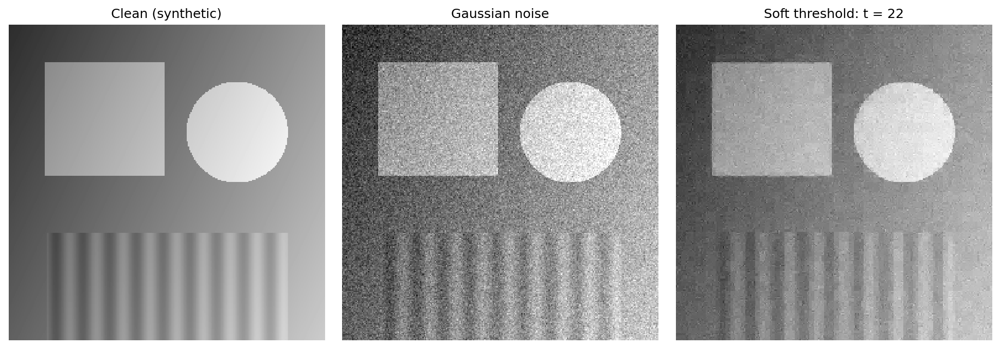
Fig. 280 مطالعهٔ موردیِ کاملاً قابل تکرار: تصویر مصنوعی، نویز گوسیِ تولیدشده با دانهٔ تصادفی ثابت و خروجی حذف نویز با آستانهگذاری نرم ضرایب جزئیات سه سطح هار.#
برای این مثال که تصویر مرجعِ تمیز را خودمان ساختهایم، میتوان میانگین مربعات خطا را اندازه گرفت:
مقدار مناسب آستانه را از پیش نمیدانیم. در شکل بعد برای همین تصویر و نویز مصنوعی، آستانهها را تغییر دادهایم. ممکن است آستانهٔ کم نویز را خوب حذف نکند و آستانهٔ بزرگ جزئیات واقعی را هم خراب کند.

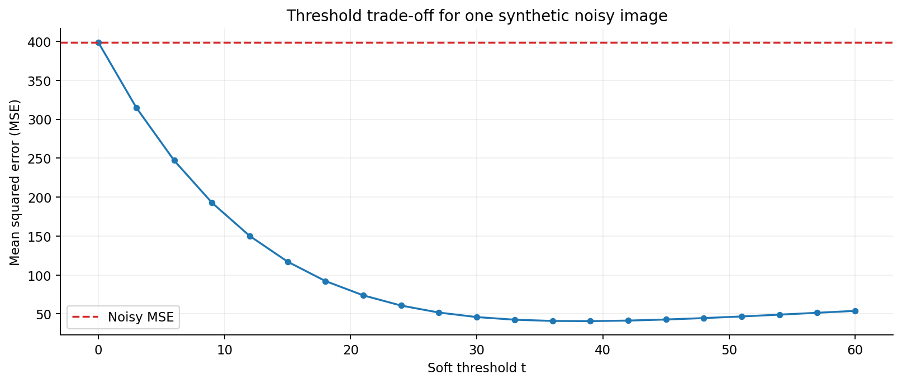
Fig. 281 تغییر MSE با آستانهٔ نرم در همین آزمایش مصنوعی. خط نقطهچین خطای تصویر نویزی است. این منحنی مبنای ادعای برتری عمومی موجک بر همهٔ روشهای حذف نویز نیست.#
چرا این مثال به علوم روز مربوط است؟#
تصاویر پزشکی، سنجشازدور، میکروسکوپی و تصویربرداری کمنور همواره با مسئلهٔ نویز و حفظ ساختارهای ظریف مواجهاند. نمایش چندمقیاسی برای تفکیک نوع ساختار مفید است. اما در کاربرد حساس مانند تصویر پزشکی، آستانهگذاریِ بیمحابا میتواند نشانههای بسیار ظریف را حذف کند؛ بنابراین این مثال صرفاً یک خط مبنا و تمرین ریاضی است، نه توصیهٔ استفادهٔ تشخیصی بدون اعتبارسنجی.
۷.۱۲ ارتباط با فشردهسازیِ امروزی: JPEG 2000، نه فهرست دهها تبدیل#
در فصل هشتم آنتروپی و کدگذاری را شناختیم. اکنون میتوانیم بفهمیم چرا نمایش موجکی به فشردهسازی کمک میکند: در بعضی تصاویر بسیاری از ضرایب جزئیات نزدیک صفرند و بخش مهم ساختار در تعداد نسبتاً کمی ضریب دیده میشود. اما خود DWT یک کدگذاریِ فایل نیست و عدد بیتهای فایل به مرحلهٔ ذخیرهسازی/کدگذاری هم بستگی دارد.

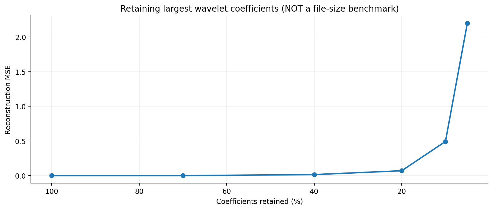
Fig. 282 در همین تصویر نمونه، نگه داشتن تعداد کمتر از ضرایبِ با قدرمطلق بزرگ و صفر کردن بقیه، MSE را افزایش میدهد. محور افقی درصد ضرایب نگهداشتهشده است، نه نسبت فشردهسازی واقعی فایل.#
یک نمونهٔ فنیِ معتبر از بهرهگیری عملی موجک، استاندارد JPEG 2000 است. پیادهسازی متنباز OpenJPEG نشان میدهد که در آن از فیلتر ۵/۳ برگشتپذیر برای حالت مناسبِ بدون اتلاف و ۹/۷ برگشتناپذیر برای حالت بااتلاف استفاده میشود [S6]. هار مثال آموزشی ماست و قرار نیست وانمود کنیم فایل ساختهشده با کد هار، همان JPEG 2000 است.

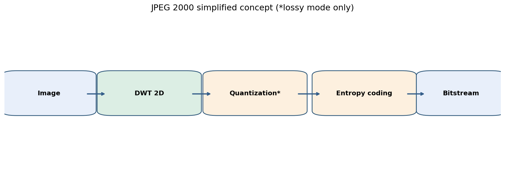
Fig. 283 جریان سادهشدهٔ حالت بااتلاف: تصویر، تبدیل موجک، کوانتیزهکردن ضرایب، کدگذاری و خروجی بیتی. در حالت بدون اتلاف، مسیر مناسبِ برگشتپذیر و پرهیز از کوانتیزهسازیِ مخرب لازم است.#
ترتیب فکری:
تبدیل موجک: تصویر را به ضرایب چندمقیاسی میبریم؛ تا اینجا ممکن است تمام اطلاعات حفظ شده باشد.
کوانتیزهکردن در حالت بااتلاف: برخی دقتها کاهش مییابند؛ از اینجا خطای بازسازی ایجاد میشود.
کدگذاری آماری/بیتی: الگوهای ضرایب را با بیتهای کمتری ذخیره میکنیم؛ تازه اینجا اندازهٔ فایل مطرح است.
این مثال، پیوندی میان «موجک فصل ۷» و «آنتروپی/فشردهسازی فصل ۸» ایجاد میکند. هدف دانشجوی پردازش تصویر در این سطح، فهم این پیوند است؛ نه بازسازی همهٔ جزئیات یک استاندارد بزرگ.
۷.۱۳ آزمایشگاه Python: از چهار عدد تا تصویر واقعیِ تولیدشده با کد#
همهٔ دادهها بهصورت مصنوعی ساخته میشوند و برای اجرای کد نیازی به دانلود تصویر از اینترنت نیست. مثالها برای سادگی فقط به NumPy (و برای ترسیم شکل به Matplotlib) نیاز دارند. کد chapter07_wavelet_core.py هار یکبعدی و دوبعدی، تبدیل معکوس، چندسطحی و حذف نویز را صریحاً پیاده میکند. فایل Notebook نیز در بسته وجود دارد.
آزمایش A — هار و بازسازی چهار عدد#
import numpy as np
from chapter07_wavelet_core import dwt_haar_1d, idwt_haar_1d
x = np.array([4, 6, 8, 10], dtype=float)
a, d = dwt_haar_1d(x)
print('a =', np.round(a, 3))
print('d =', np.round(d, 3))
print('reconstructed =', idwt_haar_1d(a, d))
خروجی تقریبی سطح اول:
a = [ 7.071 12.728]
d = [-1.414 -1.414]
reconstructed = [ 4. 6. 8. 10.]
آزمایش B — تجزیهٔ یک تصویر به چهار زیرباند#
from chapter07_wavelet_core import synthetic_image, dwt_haar_2d, idwt_haar_2d
image = synthetic_image(256)
LL, H, V, D = dwt_haar_2d(image)
reconstructed = idwt_haar_2d(LL, H, V, D)
print(image.shape, LL.shape)
print('maximum error:', abs(reconstructed - image).max())
انتظار داریم اندازهٔ تصویر ورودی (256, 256)، اندازهٔ هر زیرباند (128, 128) و خطای بازسازی در حد دقت عددی (تقریباً \(10^{-13}\) یا کمتر) باشد.
آزمایش C — یک حذف نویز ساده و قابل کنترل#
import numpy as np
from chapter07_wavelet_core import synthetic_image, wavelet_denoise
clean = synthetic_image(256)
rng = np.random.default_rng(42)
noisy = np.clip(clean + rng.normal(0, 20, clean.shape), 0, 255)
restored = wavelet_denoise(noisy, levels=3, threshold=22)
print('noisy MSE:', np.mean((noisy - clean)**2))
print('restored MSE:', np.mean((restored - clean)**2))
اگر مقدار restored MSE کوچکتر شد، یعنی در این آزمایش مشخص حذف نویز نتیجهٔ بهتری نسبت به ورودی نویزی داده است. این موفقیت برای هر نوع تصویر، نویز، آستانه یا کاربردی تضمین نمیشود.
آزمایش D — اسکالوگرام؛ فقط برای تحلیل و دیدن محل رویداد#
import numpy as np
import matplotlib.pyplot as plt
from chapter07_wavelet_core import cwt_mexican_hat
x = np.zeros(256)
x[46:53] = 2
x[186:193] = 2
scales = np.arange(3, 36)
coeff = cwt_mexican_hat(x, scales)
plt.imshow(abs(coeff), origin='lower', aspect='auto',
extent=[0, len(x), scales[0], scales[-1]])
plt.xlabel('Location')
plt.ylabel('Scale')
plt.show()
کد CWT همراه جزوه برای فهم مفهوم همبستگی محلی نوشته شده، نه بهعنوان یک پیادهسازی صنعتی با پشتیبانی کامل از سیاست مرزی و معکوس CWT. در کار پژوهشی به بررسی نمونهبرداری مقیاسها، نرمالسازی، شرایط مرزی و تطبیق با کتابخانهٔ معتبر نیاز داریم [S3].
اجرای کامل، تصویرهای خروجی و دادهٔ آزمایشی#
۷.۱۴ خطاهای مفهومی که دانشجو باید تشخیص دهد#
برداشت نادرست |
توضیح صحیح |
|---|---|
«فوریه مکان رویداد را نابود میکند.» |
فقط قدرمطلقِ طیف مکان را آشکار نمیکند؛ تبدیل کامل شامل فاز، اطلاعات را حفظ میکند. |
«مقیاس ۴ یعنی فرکانس ۴ هرتز.» |
مقیاس به موجک مادر و زمان نمونهبرداری وابسته است. |
«در DWT خروجی پایینگذر تصویر نهایی است.» |
بدون ضرایب جزئیات، معمولاً بازسازی دقیق ممکن نیست. |
«هر دو فیلتر با downsampling بازسازی دقیق میدهند.» |
شرطهای طراحی بانک فیلتر و خنثیسازی aliasing لازماند. |
«تقریب \(a\) همان میانگین حسابی خام است.» |
در هار متعامد از تقسیم بر \(\sqrt2\) استفاده میشود، نه ۲. |
«در DWT دوبعدی هر باند یک تصویر با شدت ۰ تا ۲۵۵ است.» |
ضرایب میتوانند منفی یا بزرگتر از ۲۵۵ باشند؛ نمایش رنگی باید جداگانه مقیاس شود. |
«\(LL\) کوچکتر شده، پس تصویر فشرده شده است.» |
تمام زیرباندهای جزئیات نیز بخشی از نمایش کامل هستند. |
«اگر MSE کم شد، همهٔ جزئیات مهم حفظ شدهاند.» |
MSE همهٔ اهمیتهای معنایی/تشخیصی را نمیسنجد؛ باید محتوای مهم را نیز بررسی کرد. |
«خروجی کد هار، فایل JPEG 2000 است.» |
هار فقط تبدیل آموزشی است و JPEG 2000 کدگذاری و فیلترهای خاص خود را دارد. |
۷.۱۵ پرسشها و تمرینهای پیشنهادی#
تمرین ۱ — بدون رایانه. چهار نمونهٔ \([2,6,6,10]\) را به \(a_1,d_1\) و سپس \(a_2,d_2\) تبدیل کنید. معکوس را بنویسید و حفظ انرژی را عددی تأیید کنید.
تمرین ۲ — درک فوریه. اگر یک پالس با np.roll روی دادهٔ دورهای جابهجا شود، کدام بخش DFT تغییر میکند؟ با یک جمله بیان کنید چرا این واقعیت به انگیزهٔ CWT کمک میکند.
تمرین ۳ — تفسیر بانک فیلتر. اگر چهار عدد همگی ۵ باشند، جزئیات سطح اول هار چه میشوند؟ اگر دو عدد اول ۵ و دو عدد دوم ۱۱ باشند، کدام سطح آن تغییر را نشان میدهد؟
تمرین ۴ — ماتریس ۲ در ۲. برای \(\begin{bmatrix}10&10\\10&30\end{bmatrix}\) چهار ضریب را پیدا کنید؛ سپس از روی همین چهار ضریب، چهار پیکسل را دوباره بسازید.
تمرین ۵ — مشاهدهٔ تصویر. با کد همراه جزوه یک تصویر مصنوعی بسازید، باندهای H و V را جابهجا کنید و ببینید آیا تفسیر جهتها درست باقی میماند یا نه. این تجربه نشان میدهد که نام و قرارداد زیرباند اهمیت دارند.
تمرین ۶ — تحلیل پارامتر. برای آستانههای 0, 10, 20, 40, 60، نویز باقیمانده و MSE را بسنجید. آیا کمترین MSE الزاماً با بیشترین مقدار آستانه به دست میآید؟
تمرین ۷ — مرز تصویر. برای یک سیگنال پنجنمونهای توضیح دهید چرا در همین کد هار، بدون گسترش مرزی خطا میگیریم. تکرار مقدار آخر و افزودن صفر چه تفاوتی ایجاد میکند؟
تمرین ۸ — پیوند با فصل ۸. بدون ادعای اندازهٔ فایل، نشان دهید با حذف درصد بیشتری از ضرایب کوچک هار چه تغییری در کیفیت بازسازی رخ میدهد. سپس توضیح دهید چرا تعداد ضرایب غیرصفر، بهتنهایی حجم نهایی یک فایل فشرده را تعیین نمیکند.
۷.۱۶ جمعبندی یکصفحهای#
فوریه میگوید چه فرکانسهایی در داده حضور دارند؛ موجک با مکان و مقیاس نیز کار میکند. این برتری در نمایش محلی است، نه نقص وارونپذیری فوریه.
CWT موجک را در محلهای مختلف و مقیاسهای مختلف روی داده میلغزاند و مقدار شباهت را اندازه میگیرد؛ اسکالوگرام از همین ضرایب ساخته میشود.
DWT نمایش گسسته و کارآمدی از همین تفکر است؛ در پیادهسازی معمول، بانک فیلتر تقریب و جزئیات را میسازد و پاییننمونهبرداری میکند.
هار فقط یک مثال ریاضی انتخاب شد تا همهٔ مراحل را با جمع، تفریق و \(\sqrt2\) بتوانیم حساب کنیم؛ لازم نیست دهها تبدیل دیگر را حفظ کنیم.
در دوبعد، سه نوع جزئیات جهتدار و یک تقریب داریم؛ سطحهای بیشتر فقط روی تقریبِ قبلی اعمال میشوند.
اگر همهٔ ضرایب و شرایط را نگه داریم، بازسازی متعامد دقیق است. وقتی ضرایب را آستانهگذاری یا کوانتیزه کنیم، امکان تغییر کیفیت داریم.
کاربردهایی چون حذف نویز و JPEG 2000 نشان میدهند این ریاضیات چرا مفید است؛ ولی برای کاربرد واقعی، ارزیابی کیفیت و حفظ اطلاعات مهم ضروری است.
۷.۱۷ منابع کتابی و وب#
[S1] منبع آموزشی اصلی: Rafael C. Gonzalez and Richard E. Woods, Digital Image Processing, 4th ed., Chapter 7, “Wavelet and Other Image Transforms”, Pearson (2018). این فصل بهجای بازتولید همهٔ تبدیلهای فصل اصلی، مسیر آموزشی محدود و عمیقِ موجک را انتخاب کرده است.
[S2] پشتوانهٔ نظری: Stéphane Mallat, “A Theory for Multiresolution Signal Decomposition: The Wavelet Representation,” IEEE TPAMI, 11(7), 674–693 (1989), DOI: 10.1109/34.192463؛ نسخهٔ مقاله. مبنای تحلیل چندتفکیکی و بانک فیلتر موجکی.
[S3] مستندات CWT: PyWavelets — Continuous Wavelet Transform؛ تعریف مقیاس، ارتباط با فرکانس و هشدارهای نمونهبرداری/aliasing.
[S4] مستندات DWT و 2D: PyWavelets — Discrete Wavelet Transform و 2D DWT/IDWT؛ معنا و آرایش ضرایب تقریب و جزئیات.
[S5] رفتار مرزها: PyWavelets — Signal Extension Modes؛ راهکارهای امتداد سیگنال محدود و آثار آنها.
[S6] کاربرد صنعتی: OpenJPEG — DWT implementation؛ کاربرد فیلتر برگشتپذیر ۵/۳ و برگشتناپذیر ۹/۷ در JPEG 2000.
همهٔ نمودارها با Python و دادههای تولیدشده در همین بسته رسم شدهاند؛ هیچ شکل کتاب یا تصویر خارجی بدون اجازه تکثیر نشده است. شرحها و صورتبندی آموزشی تألیف مستقل است و موارد فراتر از کتاب با منابع وبِ بالا تفکیک شدهاند.